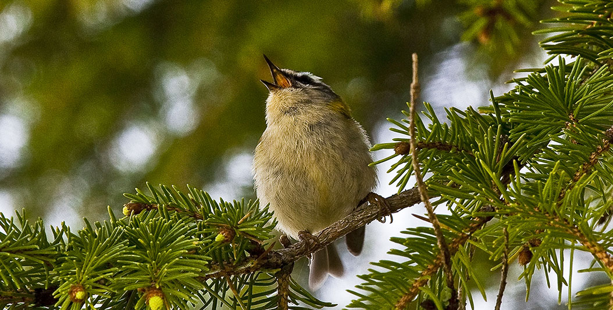
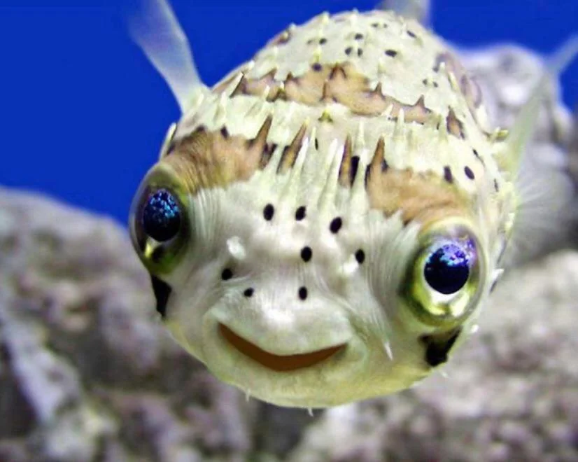
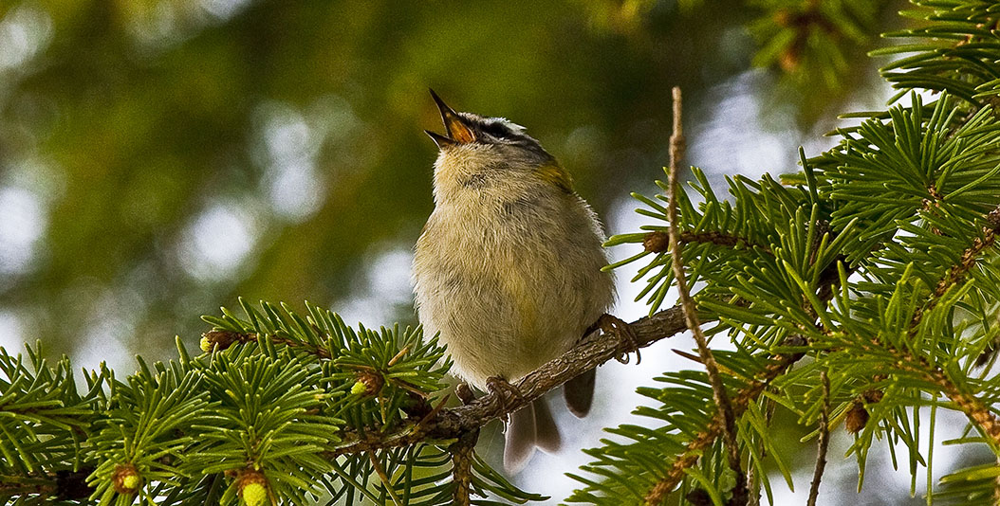
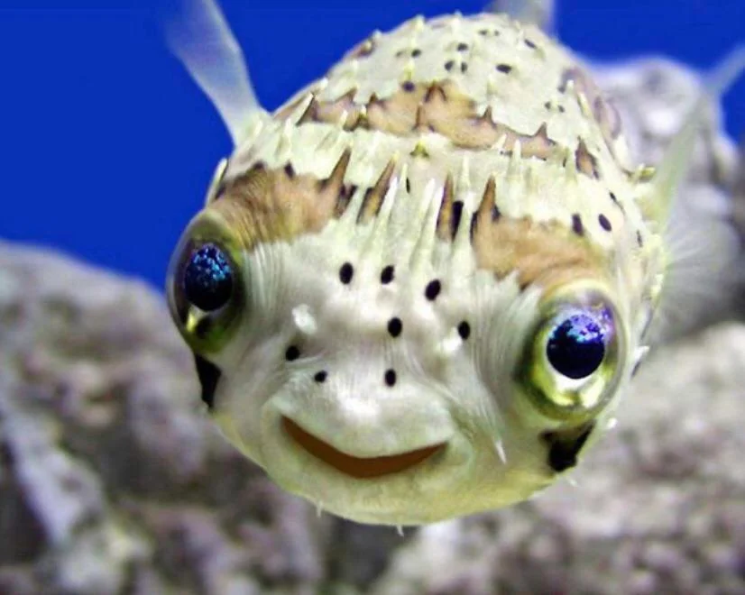

Introducción a los Cuidados de las Mascotas
Cuidar de una mascota requiere responsabilidad y dedicación. Es importante brindarles una alimentación adecuada, atención médica regular y mucho cariño para garantizar su bienestar.
Tipos de Mascotas
- Perros: Compañeros leales y protectores.
- Gatos: Independientes y cariñosos.
- Aves: Alegres y coloridas.
- Peces: Tranquilos y relajantes.
- Roedores: Pequeños y juguetones.
Ventajas de Tener una Mascota en Casa
- Reducen el estrés y la ansiedad.
- Fomentan la actividad física y el ejercicio.
- Brindan compañía y afecto.
- Ayudan a mejorar la socialización.
- Pueden mejorar la salud mental y emocional.
Desventajas de Tener una Mascota en Casa
- Requieren tiempo y compromiso.
- Pueden generar gastos adicionales en alimentación y cuidado veterinario.
- Algunas mascotas pueden causar alergias.
- Necesitan un ambiente adecuado y suficiente espacio.
- Pueden causar daños en muebles y objetos del hogar.
Imágenes de Mascotas Varias
 




Adopción de Mascotas
Dar una segunda oportunidad a un animal en busca de hogar es un acto de amor y compromiso. Adoptar una mascota no solo cambia su vida, sino también la tuya. ¡Anímate a adoptar y bríndales un hogar lleno de cariño!
Listado de Mascotas
| Nombre | Especie | Raza | Edad | Género |
|---|---|---|---|---|
| Max | Perro | Labrador | 3 años | Macho |
| Luna | Gato | Siames | 2 años | Hembra |
| Rocky | Perro | Bulldog | 4 años | Macho |
| Mia | Gato | Persa | 1 año | Hembra |
| Charlie | Perro | Beagle | 5 años | Macho |
| Simba | Gato | Común | 3 años | Macho |
| Toby | Perro | Pastor Alemán | 2 años | Macho |
| Nina | Gato | Angora | 3 años | Hembra |
| Bruno | Perro | Dálmata | 4 años | Macho |
| Pelusa | Gato | Común | 2 años | Hembra |
| Chispas | Perro | Poodle | 1 año | Macho |
| Canela | Gato | Común | 4 años | Hembra |
| Thor | Perro | Golden Retriever | 5 años | Macho |
| Kiara | Gato | Bengala | 2 años | Hembra |
| Zeus | Perro | Husky | 3 años | Macho |